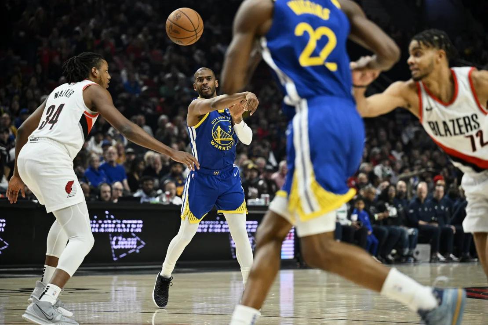

The Golden State Warriors edged past the Portland Trail Blazers 100-92 and are now tied on a 45-35 record with the Sacramento Kings and Los Angeles Lakers as the NBA regular season winds down to its final two games. The Warriors held a narrow one-point lead over the struggling Blazers going into the fourth quarter but pulled away down the stretch behind a team-high 22 points from Steph Curry. It was a tough shooting night for the two-time MVP, who shot just 36.4% from the floor, but he got it done elsewhere by adding eight assists, seven rebounds, two blocks and a steal. “You know they’re going to play hard and with a lot of energy, and for the most part, it worked for about 42 minutes, but we just got really disciplined down the stretch, had great point of attack defense,” Curry said, per ESPN. “We just competed and that last six minutes was hard-nosed basketball. That’s what it took to win.” Deandre Ayton scored a game-high 25 points for Portland to go with 11 rebounds, while rookie Scoot Henderson continued his late season improvement with 18 points and 12 assists. It was Henderson’s eighth game of the season with double-digit assists, the most of any rookie in the NBA.
The Warriors appear to have caught the winning bug at just the right time with their third straight victory, while the Kings and Lakers have both lost two on the bounce. After a huge 135-123 win at Sacramento on Thursday, the New Orleans Pelicans currently sit in the sixth and final automatic playoff spot, one game ahead of the Phoenix Suns in seventh as both teams desperately try and avoid the Play-In Tournament. In what should be a thrilling end to the season, the Pelicans will travel to Golden State before ending their campaign at home to the Lakers, while the Suns’ final two games are away versus the Kings and the No. 2 seeded Minnesota Timberwolves. After the Warriors host the Pelicans on Friday, Steve Kerr’s team will then welcome the No. 12 seed Utah Jazz in its season finale. “It’s a loaded conference. Everybody’s good,” Kerr said. “It’s just tough to make up ground.”